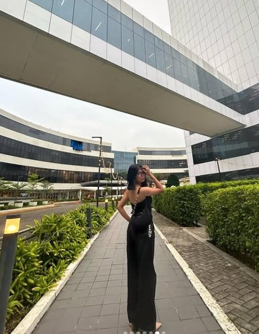

• I am 18 years old
• I am a senior high school student
• I live in Tuyan, Naga City
• I am usually quite but once you start a conversation with me, i became surprisingly chatty
• Listening to music
• Watching Movies
My strength is my calm, quiet nature paired with the ability to become engaging and expressive once a conversation begins. I listen closely, communicate thoughtfully, and make others feel comfortable and heard.
I value genuine connection, kindness, and respect. I believe in listening, being honest, and creating a space where people feel comfortable and understood.
Personal Goal
• My personal goal is to keep growing as a person while building meaningful connections with others.
Academic Goal
• My academic goal is to excel in my studies and continually expand my knowledge.
CareerGoal
• My career goal is to become a civil engineer.
• I can stay focus when I really love what I am doing. I enjoy simply things that makes me happy, I believe small efforts lead to big success.